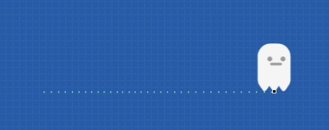
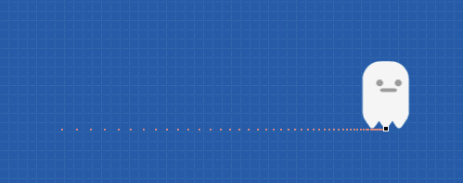
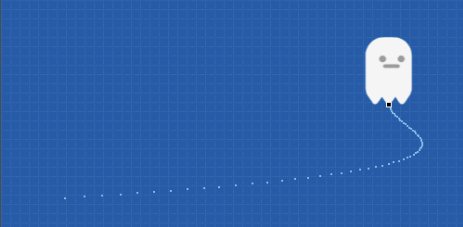
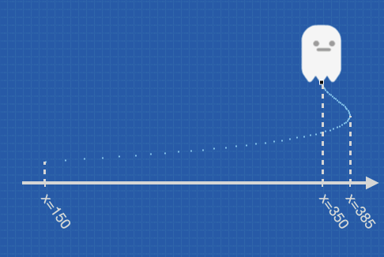
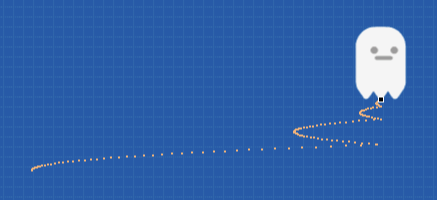
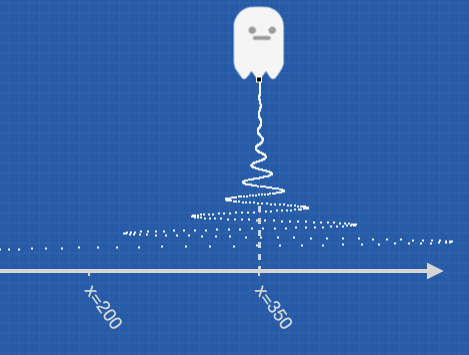
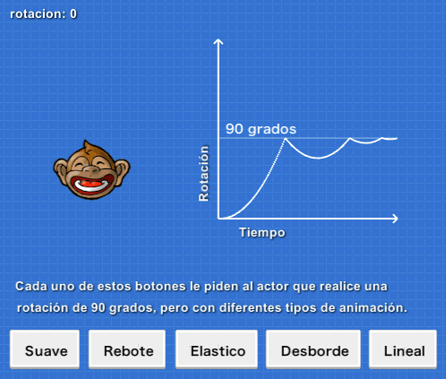
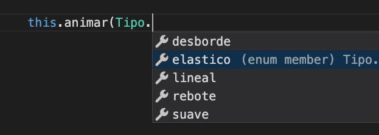

Усі актори мають низку властивостей, як-от координати x та y, rotacion (обертання) і transparencia (прозорість). Загалом є більше 10 властивостей, готових до зміни, як за допомогою редактора, так і за допомогою коду.
Якщо поступово змінювати ці властивості, то можна отримати доволі цікаві анімації. Наприклад, якщо поступово змінювати значення обертання, то актор буде здійснювати обертальний рух:
Те ж саме з іншими властивостями: якщо ми хочемо, щоб актор переміщувався праворуч від екрана, ми можемо змінювати значення його координати x багато разів, щоб здавалося, що він "переміщується" у певний бік на екрані.
Однак, створення анімацій, змінюючи властивості одна за одною, може бути втомливим, якщо ми дійсно хочемо робити повну анімацію. Є спосіб, який може спростити це.
Усім акторам доступна функція, яка називається animar (анімація). Вона полегшує створення анімації або рухів шляхом зміни властивостей актора.
Якщо ми хочемо, щоб актор повертався безліч разів, як показано в анімації вище, ми можемо написати наступний код:
Функція this.animar запускає анімацію актора. Функція приймає два аргументи:
Tipo.lineal (лінійна), Tipo.desborde (відхилення і повернення), Tipo.suave (уповільнення), Tipo.elastico (еластична), Tipo.rebote (відскок). Ми розглянемо типи анімації в наступному розділі.5 разів або як спеціальне значення ви можете зазначити -1, щоб анімація тривала безперервно.Після виклику this.animar() можна вказати послідовність анімацій для виконання за допомогою крапкової нотації.
Наприклад, у наступному прикладі актора просять переміститися праворуч, повернутися на 180 градусів, а потім один раз повернутися до точки (0, 0):
Є кілька властивостей, які можна анімувати, наприклад положення акторів, обертання, прозорість тощо.
Щоб побачити повний список анімацій, введіть круглі дужки, крапку і редактор запропонує вам відкрий список анімацій:
Деякі анімації приймають такі параметри, як очікуване значення для властивості та загальна тривалість анімації. Не хвилюйтеся, редактор допоможе вам дізнатися параметри, які очікує кожна анімація.
Перший аргумент функції this.animar може мати одне із значень:
Tipo.linealTipo.suaveTipo.desbordeTipo.reboteTipo.elasticoЩо означають ці значення? Чим вони відрізняються? Анімації - це, в основному, перетворення властивостей з плином часу, тому ці типи анімацій відрізняються тим, як анімація розвиватиметься з часом.
Давайте розглянемо тип анімації Tipo.lineal (лінійна), який є одним із найпростіших.
Уявіть, що у нас є актор, і ми просимо його зробити лінійний рух по осі x за допомогою цього коду:
Якщо намалювати, як актор рухається в часі за допомогою анімації типу linear, ми побачимо, що рух відбувається постійно, завжди з однаковою швидкістю:

А як там решта анімацій?
Тип анімації suave (уповільнення) схожий на лінійний, але змушує актора рухатися з певним уповільненням:

Уповільнення можна помітити, оскільки точки, через які пройшов актор, розташовуються ближче одна до одної.
Тип анімації desborde (відхилення і повернення) змусить актора рухатися далі кінцевої точки, але із поверненням у неї.
Щоб цей графік виглядав трохи краще, його поєднали з вертикальним рухом:

Зверніть увагу, персонаж пройшов повз кінцеву координату x = 350, до якої ми зазначили йому переміститися, але обережно піднявшись вище, повернувся у кінцеву точку:

Анімація типу "rebote" (відскок) досягне потрібної точки, але повернеться назад і кілька разів виправить положення:

Цей тип анімації ідеально підходить для рухів, які здаються механічними, наприклад, обертання передач або важелів.
Еластичні (пружні) анімації типу "elastico" є найбільш вражаючими, коли використовуються в рухах і обертаннях:

Цей тип анімації також виглядає чудово, якщо застосувати його до масштабів, наприклад, якщо ви хочете зробити актора "губчастим", ви можете досягти цього, об’єднавши дві подібні анімації:
this.escala_x = 0.6;
this.escala_y = 1.4;
this.animar(Tipo.elastico, 1, 5).escalar_x_hasta(1);
this.animar(Tipo.elastico, 1, 5).escalar_y_hasta(1);Один із способів допомогти вам розпізнати типи анімації - спробувати приклад "tipos_de_animacion" із розділу Приклади:

Однак, ви можете перевірити, який тип анімації найкраще працює у грі, яку ви створюєте. Пам’ятайте, що коли ви пишете код, редактор сам визначить усі доступні параметри анімації:
